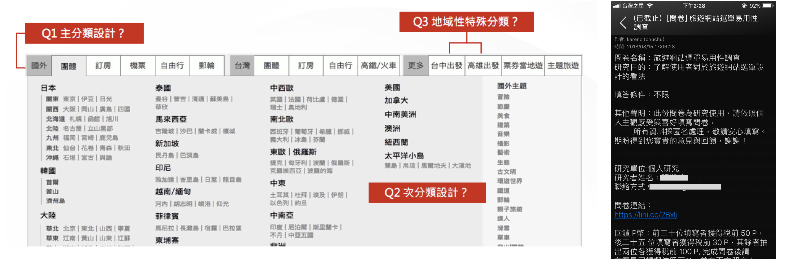
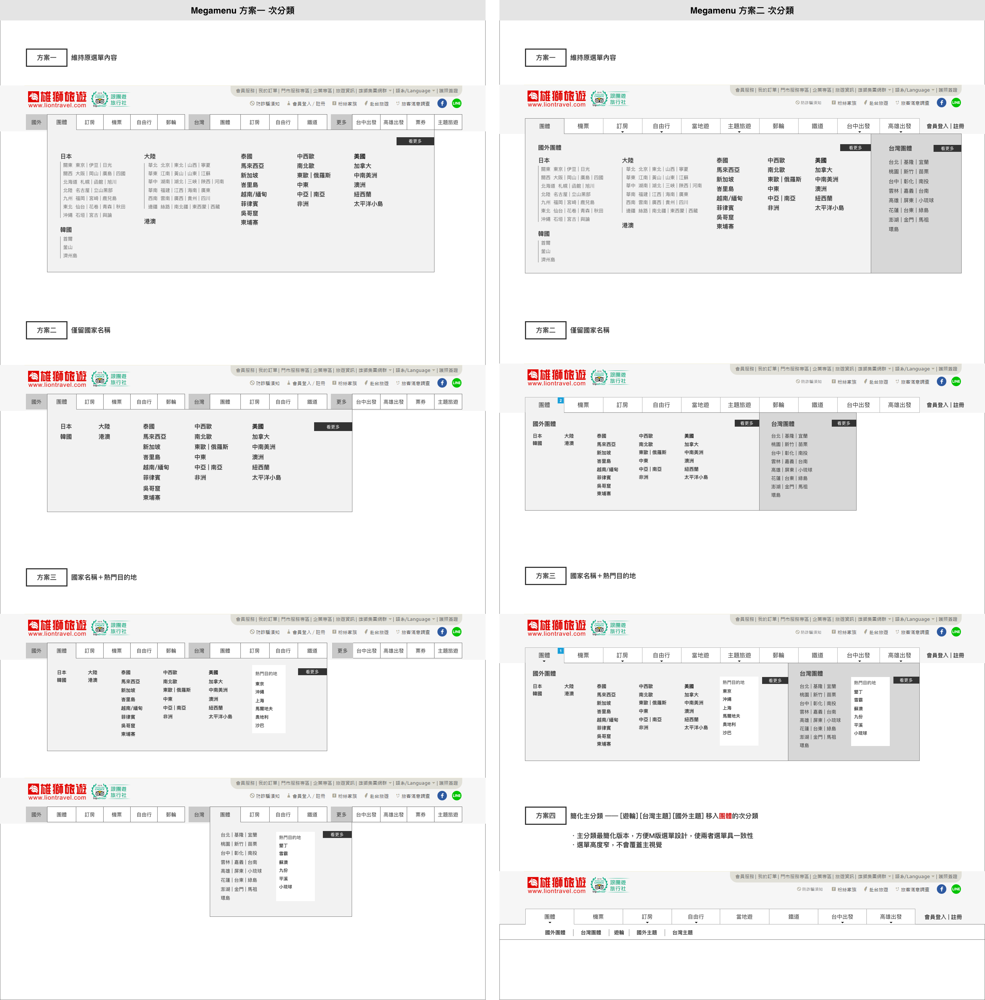

旅遊網站導覽列偏好
研究問題目的
了解外部USER對旅遊電商平台導覽列架構邏輯的易用性評價，以此強化網站架構的邏輯。想要深入了解主分類設計與次分類設計，較有效的分類的方式，減少旅客查找的速度，此外也評估地域性的特殊分類「台中出發」「高雄出發」拉至第一層選單的必要性。
我的角色
UX
此研究由我與另一位同事共同執行
主要職責
1.負責繪製各方案的研究素材，使用Axure並增加各種hover及點擊效果擬真。
2.將問卷結果使用進行統計分析，採單因子變異數分析及卡方檢定。
研究方法
採問卷調查法，藉由滾雪球及在社交平台上發文，預計招募350位受試者。
研究工具：情境任務表、系統易用性量表（SUS）
研究素材：根據三個研究問題，每題皆有兩方案。經與主管定調，直接刪除一方案，因此為7種版本的導覽列。每種導覽列先採隨機招募50位受試者，再同步觀察各組的年齡分佈需具同質性。

【研究素材】
Let's Connect
0987672045
yilingchu810@gmail.com
yilingchu810@gmail.com
Developed by me.